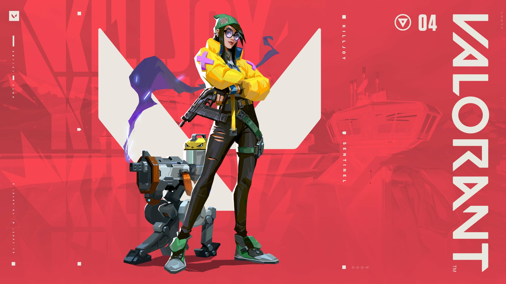
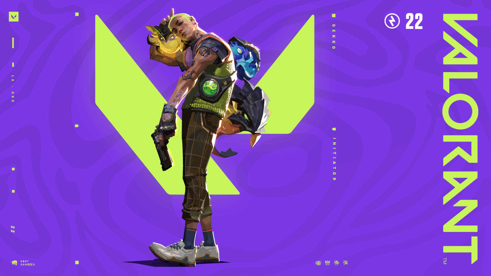
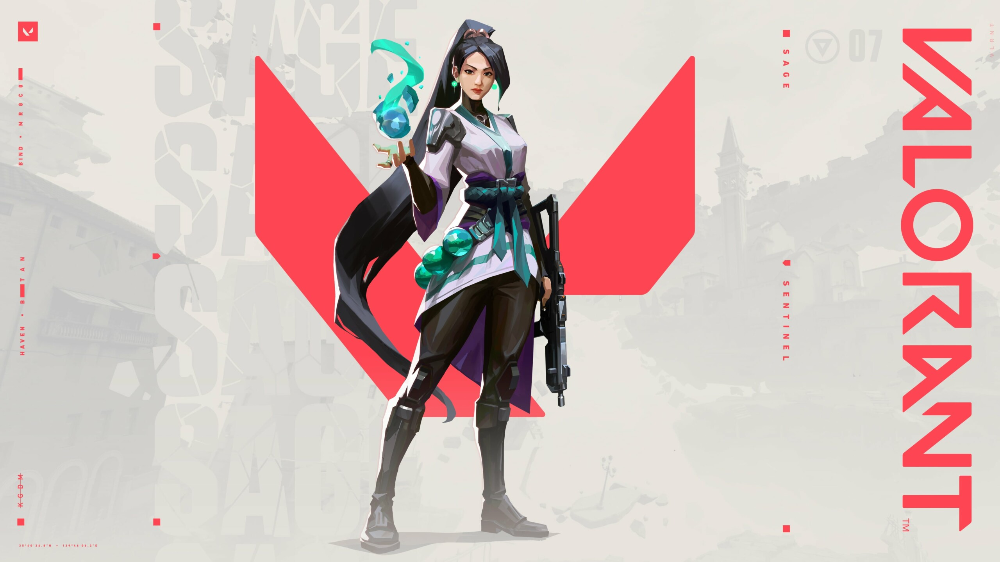

| Agente |
Descrição |
|  |
Killjoy é uma Agente de Valorant especializada em defesa e controle de área. Ela é uma mestre da tecnologia,
capaz de implantar torretas de ataque automático, armadilhas e um robô espião. Suas habilidades permitem que ela
proteja locais estratégicos e impeça o avanço inimigo. Além disso, Killjoy também possui um dispositivo ultimate
chamado "Lockdown", que detém todos os inimigos em uma área específica, tornando-os vulneráveis e facilitando a
eliminação. |
|  |
Gekko é um agente sentinela em Valorant que pode convocar uma tripulação de criaturas para ajudá-lo na batalha.
Ele é um jovem hispano-americano que cresceu em Los Angeles. Ele é conhecido por sua criatividade e seu amor pelos
animais. |
 |
Reyna é uma Agente de Valorant focada em eliminações e auto-empoderamento. Ela possui habilidades que a tornam
extremamente letal quando consegue eliminar inimigos. Sua habilidade de cura chamada "Disparo de Alma" permite que
ela se cure ao eliminar inimigos, enquanto sua habilidade "Olhar do Devorador" a torna invulnerável por um curto
período de tempo. Reyna também pode se tornar temporariamente invisível e ganhar velocidade de movimento com sua
habilidade ultimate, chamada "Fúria Selvagem". |
 |
Harbor é um agente controlador em Valorant que pode controlar e convocar massas de água do nada. Ele é um
ex-agente da força-tarefa que trabalhou para o REALM para recuperar artefatos antigos do mercado negro e
devolvê-los aos seus legítimos proprietários. Ele é conhecido por seu coração bondoso e força mortal em combate.
|
|  |
Sage é uma Agente de Valorant voltada para cura e suporte. Ela possui habilidades de cura e ressurreição que
podem ser cruciais para a sobrevivência de sua equipe. Sage pode curar a si mesma e a outros jogadores com sua
habilidade "Orbe de Cura" e também pode reviver um companheiro de equipe que tenha sido eliminado com sua
habilidade ultimate, chamada "Renascer". Além disso, ela pode criar uma parede de gelo para bloquear o avanço
inimigo e usar uma esfera de lentidão para desacelerar os oponentes. Sage é uma escolha popular para jogadores que
preferem um estilo de jogo mais defensivo e de apoio. |